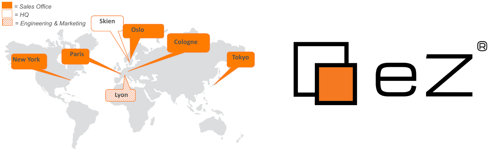
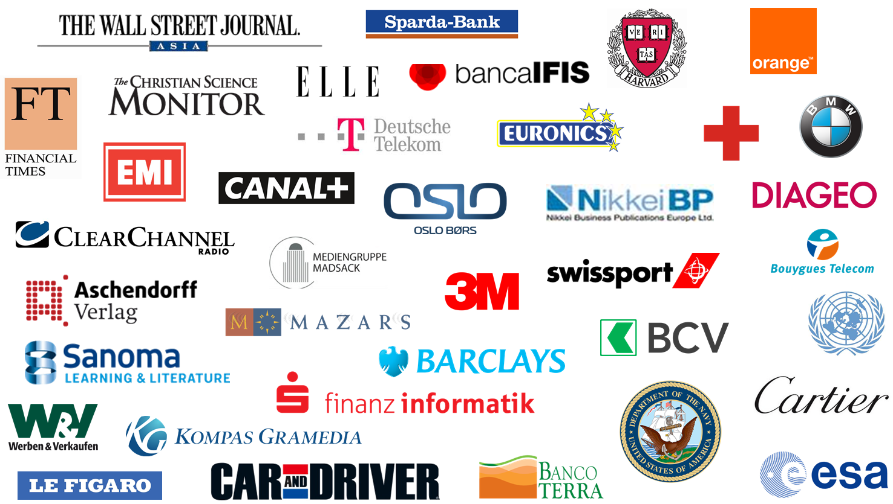

Création d'un site orienté contenu en 45 min.
Disponible en ligne:
http://j.mp/ez-from-scratch
Damien Pobel <dp@ez.no>
- Membre d'eZ Community depuis 2005
- Fait partie de l'équipe eZ Engineering depuis 2011
- Lead engineer User Interface at eZ
- Webmaster de http://www.planet-ezpublish.fr/, fonctionnant sous eZ Publish 5!
Patrick Allaert <patrickallaert@php.net>
- Membre d'eZ Community depuis 2005
- Membre de PHP internals depuis 2009
- Fait partie de l'équipe eZ Engineering depuis 2009
- Fondateur de Libereco Technologies
- Auteur de l'extension PHP APM
eZ Systems
Éditeur de logiciel international
- Fondé en 1999 à Skien
- Localisé à :Skien, Oslo, Lyon, Paris, New York, Tokyo
- 70 employés
- Investisseurs norvégiens
- Open Source Commercial
- Large communauté internationale :
44 000 membres, 250 000 installations - Modèle d'abonnements
Références
Cas d'utilisation
- Site d'une conférence PHP :-)
-
Les besoins:
- lister les conférences, conférenciers et salles, tout en pouvant passer d'une information à l'autre.
Site en construction!
Tout bon client se doit de changer les spécifications en cours...
- ... et tous projets d'avoir anticipé les possibilités de changements!
-
Apportons quelques modifications aux:
- conférences;
- conférenciers.
Site en construction!
Conclusion
Fin
?
- Psssst: n'oubliez pas de mettre vos commentaires sur: https://joind.in/9358
Crédits
- Photo "Under Construction": http://www.flickr.com/photos/jasoneppink/8534678311